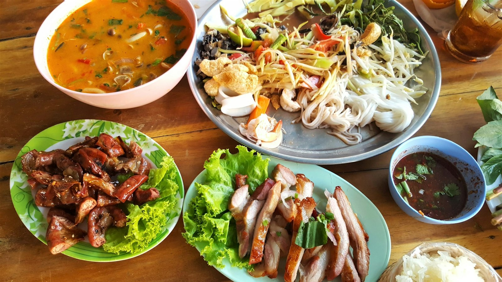
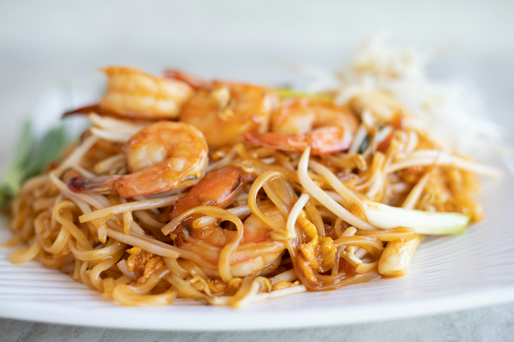

Thailändsk restaurang · Gärdet
Aiyara
Äkta thailändska smaker från heta wokar – lagat med kärlek på Rindögatan 17. Ät hos oss, ta med eller få det levererat.
4,7 av 5 · 600+ omdömen på Google


Välkommen
Gärdets kvarterskök för thailändsk mat
Hos Aiyara lagas varje rätt från grunden med färska råvaror, thailändska kryddor och rejäl wokhetta. Kom in på lunch, ta med middagen hem eller låt oss leverera till dörren.
VegetarisktGröna alternativ på menyn
LeveransThaimat direkt hem till dig
Take awayRing in, hämta varmt
Nära T-GärdetBuss 1 & 54 stannar nära
Gästernas betyg
4,7
★★★★★
Baserat på över 600 omdömen på Google. Tack till alla som ätit hos oss!
Besök oss
Öppettider & hitta hit
Öppettider
| Måndag – fredag | 10:30 – 20:00 |
| Lördag – söndag | 12:00 – 20:00 |
Kontakt
Rindögatan 17, 115 36 Stockholm
Nära T-Gärdet · Buss 1 & 54
073-524 01 55
aiyaragardet@gmail.com